Monochrome-first, ultra-simple geometric concepts.
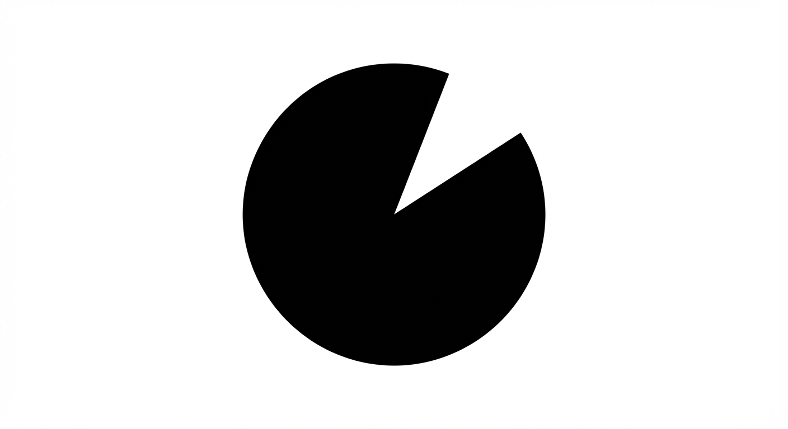01_dot_notch_disc
Design an ultra-simple symbol using only two primitives: one solid disc and one geometric notch cut. The notch should create a distinctive silhouette. Monochrome black on white.
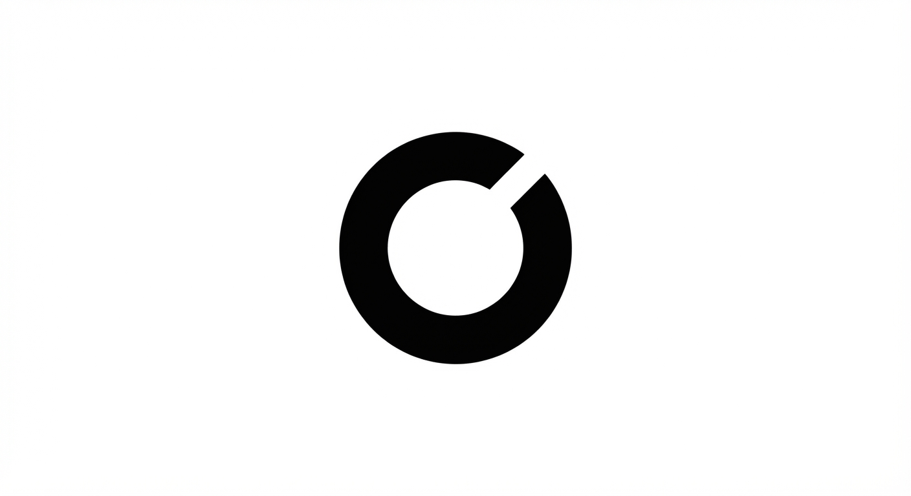02_offset_ring
Create one thick circular ring with a single offset opening. No extra elements. The opening position must make the shape instantly recognizable. Monochrome black on white.
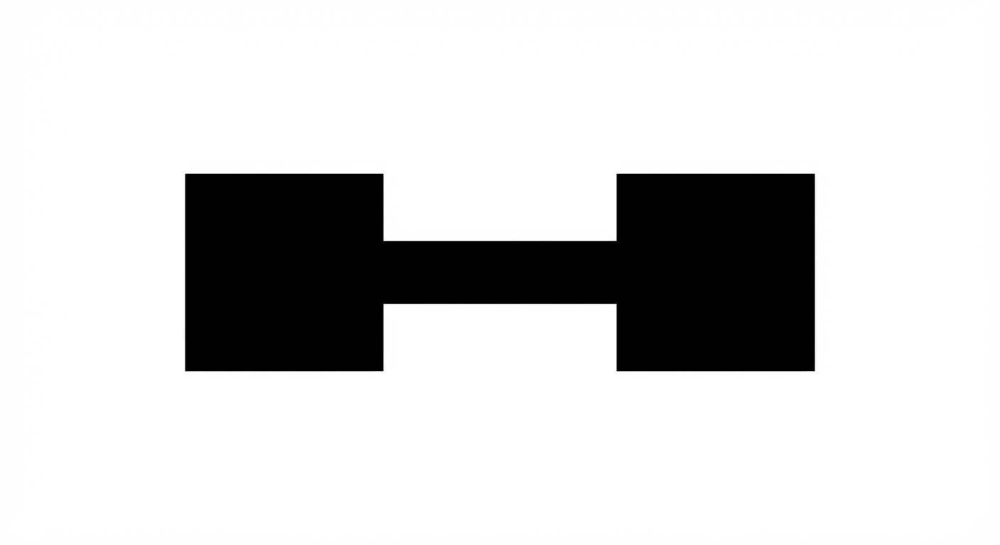03_twin_node_bridge
Design exactly two solid nodes connected by one thick bridge stroke. Keep perfect symmetry and heavy geometry. No detail beyond these forms. Monochrome black on white.
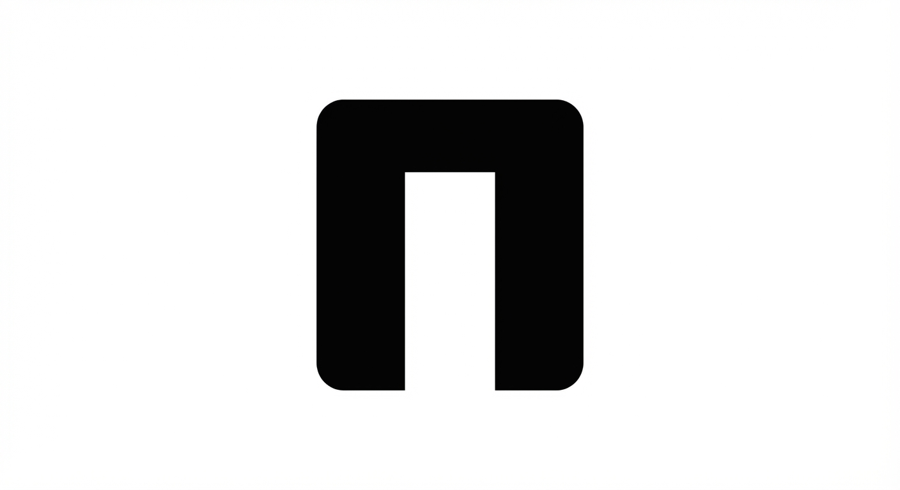04_gate_block
Create a minimal gate-like block symbol: two vertical pillars and one top bar, all thick and rounded. One clean negative-space opening only. Monochrome black on white.
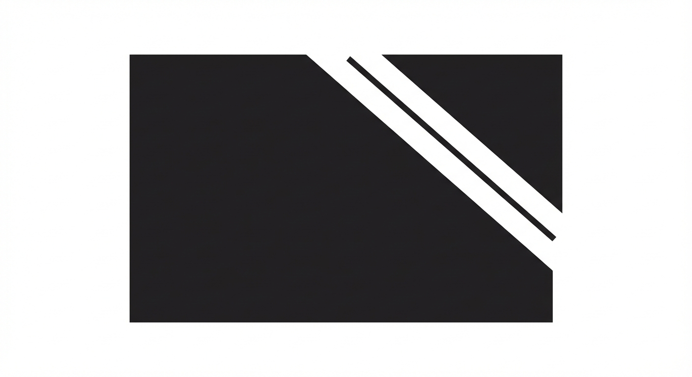05_monolith_single_cut
Design a single bold monolith shape carved by one precise diagonal cut. The cut must be the identity. No second-level decoration. Monochrome black on white.
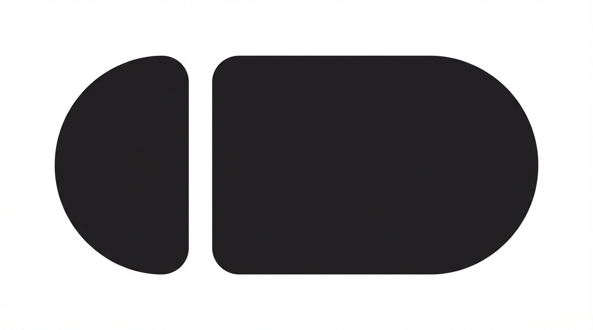06_pill_split
Create one horizontal pill shape split by one vertical notch into two unequal masses. Keep edges smooth, structure basic, and silhouette unique. Monochrome black on white.
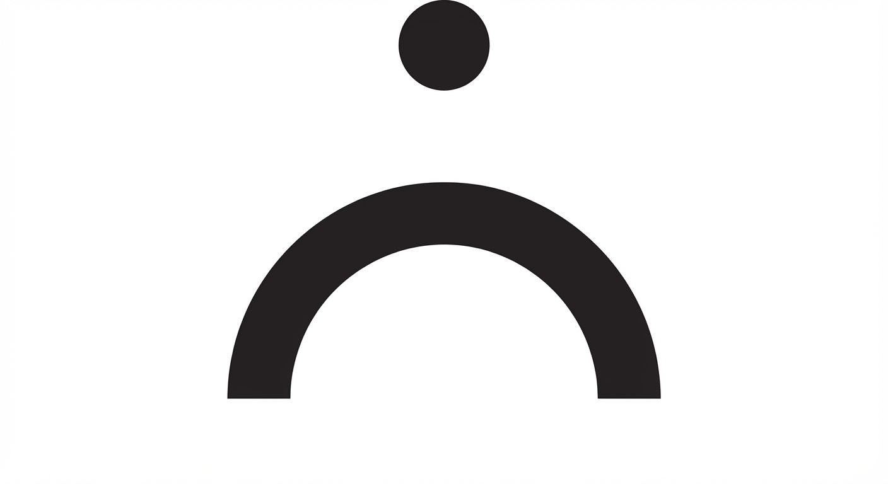07_arc_anchor
Design a symbol with one thick lower arc and one small centered anchor dot above it. Exactly two components, balanced and architectural. Monochrome black on white.
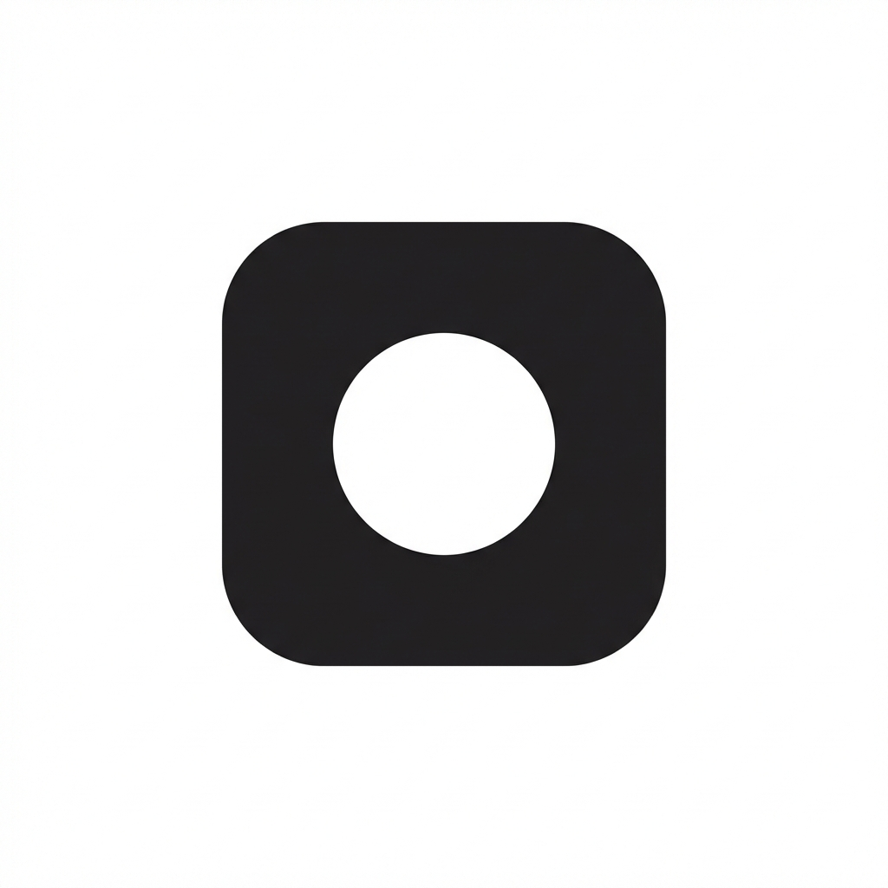08_square_aperture
Create one rounded square with one internal circular aperture cut. No additional elements. Prioritize clean spacing and icon readability at tiny sizes. Monochrome black on white.
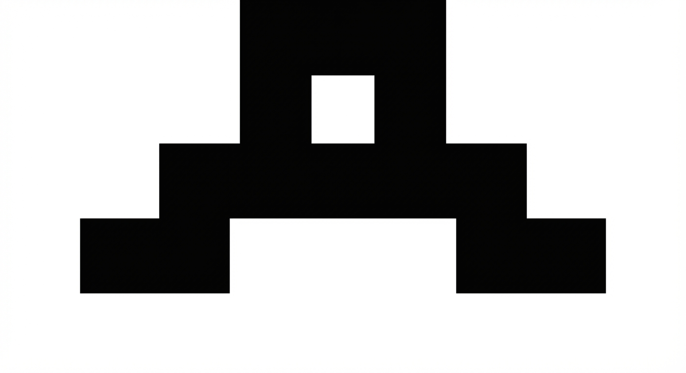09_step_bridge
Design a stepped bridge symbol using three rectangular levels merged into one continuous form. Keep it basic, thick, and highly structured. Monochrome black on white.
10_disc_pointer
Create one solid disc with one triangular directional bite removed from its edge. The bite should imply guidance without looking like an arrow icon. Monochrome black on white.
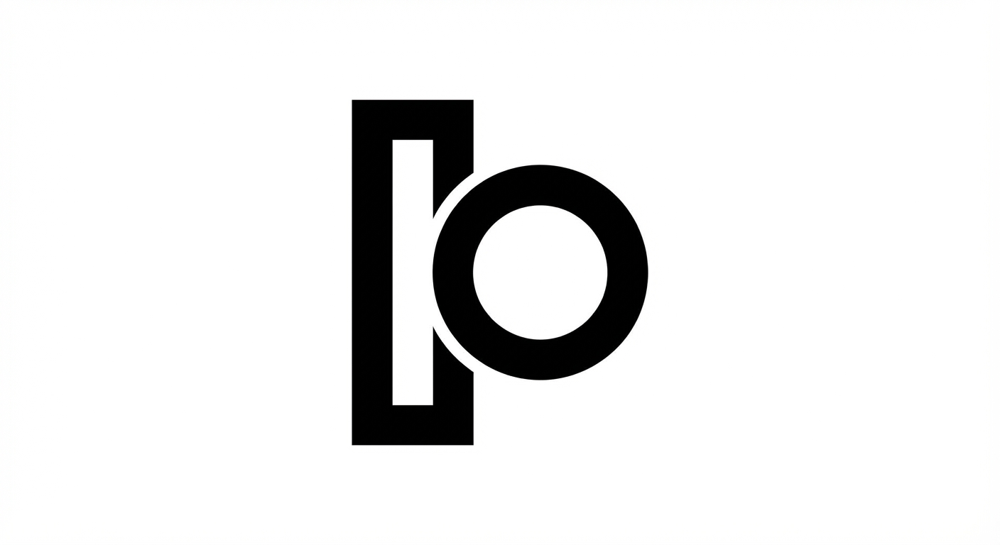11_column_loop
Design a minimal looped column form: one vertical column merged with one simple loop. Avoid lettering; keep abstract and geometric. Monochrome black on white.
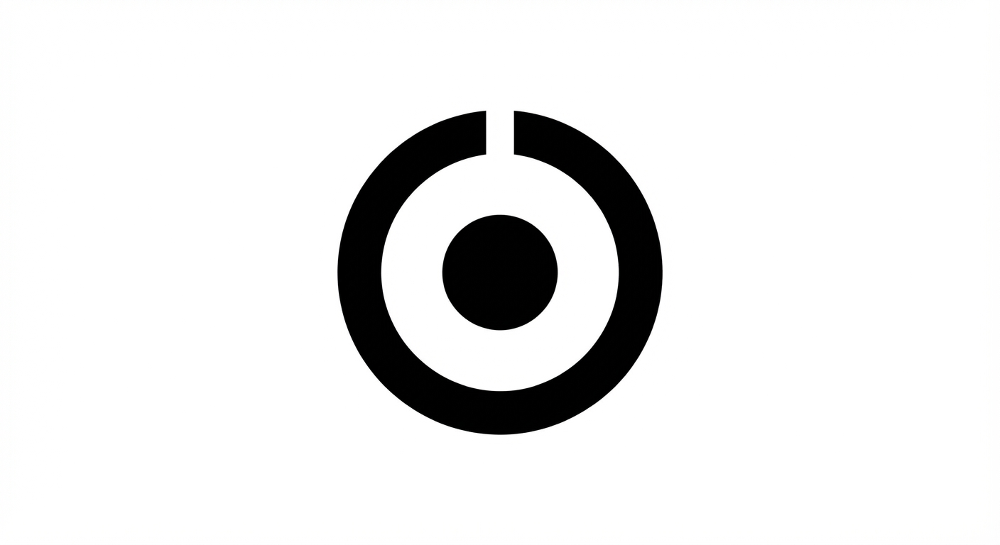12_core_halo
Create a two-part symbol: one compact core dot and one thick halo arc around it with a single break. Keep forms heavy, clean, and memorable. Monochrome black on white.